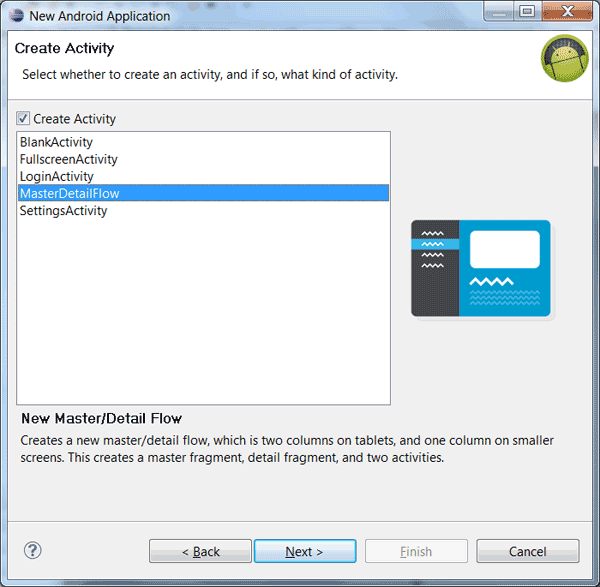
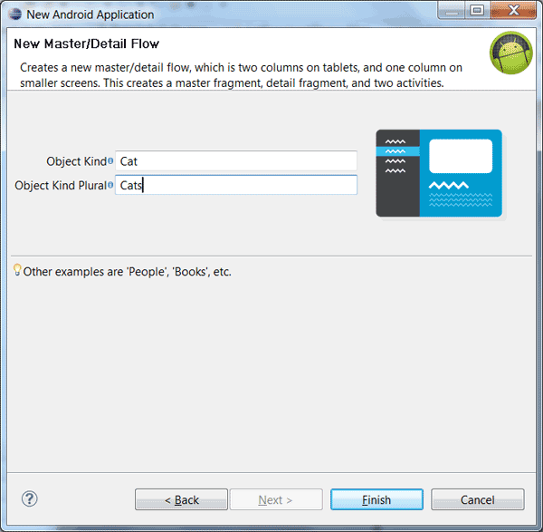
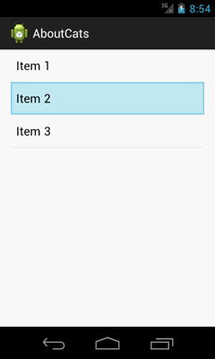
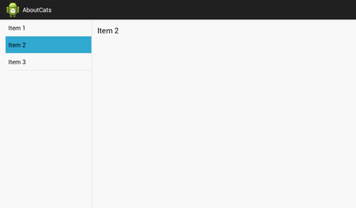
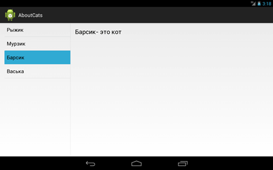
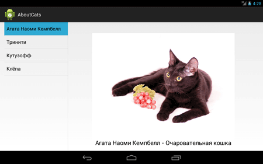
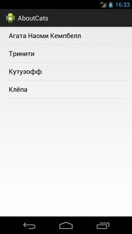
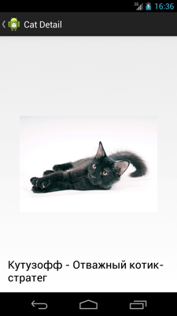

/* Моя кошка замечательно разбирается в программировании. Стоит мне объяснить проблему ей - и все становится ясно. */
John Robbins, Debugging Applications, Microsoft Press, 2000

/* Моя кошка замечательно разбирается в программировании. Стоит мне объяснить проблему ей - и все становится ясно. */
John Robbins, Debugging Applications, Microsoft Press, 2000
А в Eclipse есть отдельный шаблон MasterDetailFlow. Давайте его и изучим.
Шаблон MasterDetailFlow специально заточен под создание готового каркаса приложения, которое будет красиво смотреться и на телефоне и на планшете, используя фрагменты.
Использование шаблона MasterDetailFlow позволяет существенно сэкономить время на создание заготовки будущего приложения, которое уже имеет все необходимые классы активностей, фрагментов, файлы разметки, папки для различных видов ориентации.
Создаём новый проект AboutCats. На первом шаге сразу выбираем для поля Minimum Required SDK значение API 11: Android 3.0 (Honeycomb) или выше.
Ещё через несколько шагов вы попадёте на окно выбора шаблона. Выбираем шаблон MasterDetailFlow. В описании к шаблону говорится, что будут созданы блоки master/detail, представляющие собой две колонки на планшетах и одну колонку на устройствах с маленьким экраном. Шаблон создаёт главный фрагмент, детальный фрагмент и две активности.

Дальше появляется новое окно с двумя текстовыми полями. В первом поле надо указать название одиночного объекта, который будет являться элементом списка. Это может быть названием книги, ФИО, имена котов. Напишем здесь Cat.
Во втором поле нужно ввести название, которые будет сопоставлено с первым полем. Для удобства обычно используют множественное число от первого слова: Book-Books, Person-People, Cat-Cats.

Кнопка Finish завершает подготовку шаблона и через несколько секунд мы получаем готовую структуру проекта. Рассмотрим его подробнее.
Для начала раскроем папку res. Здесь мы сразу увидим новые папки values-large и values-sw600dp, которые содержат файл refs.xml. Откроем любой из этих файлов (они одинаковы):
<resources>
<!--
Layout alias to replace the single-pane version of the layout with a
two-pane version on Large screens.
For more on layout aliases, see:
http://developer.android.com/training/multiscreen/screensizes.html#TaskUseAliasFilters
-->
<item name="activity_cat_list" type="layout">@layout/activity_cat_twopane</item>
</resources>
Комментарии в файле говорят, что данный ресурс является псевдонимом, который замещает разметку activity_cat_list разметкой activity_cat_twopane. Кстати, приведенный адрес на документацию, имеет официальный русский перевод (http://developer.android.com/intl/ru/training/multiscreen/screensizes.html#TaskUseAliasFilters).
В папке layout вместо одного стандартного файла activity_main.xml теперь четыре файла: activity_xxx_detail.xml, activity_xxx_list.xml, activity_xxx_twopanel.xml, fragment_xxx_detail.xml. Изучив код файлов, вы поймёте для чего они предназначены.
Ещё одна новинка нас ожидает в папке src. Здесь мы видим два пакета: стандартный пакет, который мы задавали при создании нового проекта и второй пакет, где к имени добавлено ещё слово dummy.
Запустим проект, чтобы посмотреть, как работает приложение. Так как проект расчитан на работу под разные типы устройств, вам придётся создать два отдельных эмулятора: один под смартфон, второй под планшет.


Ну, а дальше дело техники. Изучайте код, добавляйте свои списки, дорабатывайте под себя.
Скажем, элементы списка добавляются через код в DummyContent.java:
static {
addItem(new DummyItem("1", "Рыжик"));
addItem(new DummyItem("2", "Мурзик"));
addItem(new DummyItem("3", "Барсик"));
addItem(new DummyItem("4", "Васька"));
}
В классе CatDetailFragment изменим текст для вывода подробного описания к элементу списка в методе onCreateView():
// Show the dummy content as text in a TextView.
if (mItem != null) {
((TextView) rootView.findViewById(R.id.cat_detail))
.setText(mItem.content + "- это кот");
}

В этом же методе мы видим раздувание (inflate) из XML-разметки:
View rootView = inflater.inflate(R.layout.fragment_cat_detail,
container, false);
Последний параметр должен быть равен false, что означает, что Android сам присоединит ваше представление к фрагменту.
В классе CatListFragment.java содержится интерфейс по имени Callbacks:
public interface Callbacks {
/**
* Callback for when an item has been selected.
*/
public void onItemSelected(String id);
}
Интерфейс используется в методе onListItemClick():
@Override
public void onListItemClick(ListView listView, View view, int position,
long id) {
super.onListItemClick(listView, view, position, id);
// Notify the active callbacks interface (the activity, if the
// fragment is attached to one) that an item has been selected.
mCallbacks.onItemSelected(DummyContent.ITEMS.get(position).id);
}
Откроем файл класса CatListActivity.java. Вот отрывок из кода - метод onCreate():
private boolean mTwoPane;
@Override
protected void onCreate(Bundle savedInstanceState) {
super.onCreate(savedInstanceState);
setContentView(R.layout.activity_cat_list);
if (findViewById(R.id.cat_detail_container) != null) {
// The detail container view will be present only in the
// large-screen layouts (res/values-large and
// res/values-sw600dp). If this view is present, then the
// activity should be in two-pane mode.
mTwoPane = true;
// In two-pane mode, list items should be given the
// 'activated' state when touched.
((CatListFragment) getFragmentManager().findFragmentById(
R.id.cat_list)).setActivateOnItemClick(true);
}
// TODO: If exposing deep links into your app, handle intents here.
}
Комментарии в коде поясняют, что при больших размерах экрана булевой переменной mTwoPane присваивается значение true, что означает использование двухпанельного режима. В этом режиме выбранный элемент списка должен подсвечиваться - используется метод setActivateOnItemClick().
Разберёмся, как приложение определяет размеры экрана и выводит нужную разметку. Откроем папку res/layout и увидим, что там три разметки для активности и одна для фрагмента (ориентируйтесь по названиям файлов).
Файл activity_cat_list.xml содержит только списочный фрагмент.
Файл activity_cat_detail.xml содержит только разметку FrameLayout, который программно будет заменяться на нужный фрагмент.
Файл activity_cat_twopane.xml содержит сразу и fragment и FrameLayout внутри контейнера LinearLayout.
Теперь начинается магия. Мы могли бы разместить новые разметки в папках типа layout-land, layout-large, layout-small и т.д. По сути, мы бы просто дублировали одни и те же файлы в новые папки. Это вполне рабочий вариант, но он неудобен для дальнейшей поддержки, если понадобится, что-то менять. Придётся редактировать сразу несколько файлов, идентичных по содержанию.
Вместо этого подхода, мы можем сделать ссылку на нужный ресурс следующим образом. Предположим, мы хотим использовать двухпанельный режим для устройств, у которых ширина экрана не меньше 600dp. Создадим папку values-sw600dp (в нашем проекте она создана автоматически) специально для устройств, чей экран подходит под данное разрешение (планшеты на 7 и 10 дюймов). В данной папке создаётся файл refs.xml следующего содержания:
<resources>
<item name="activity_item_list" type="layout">@layout/activity_cat_twopane</item>
</resources>
Мы видим, что в файле есть ссылка на знакомый нам файл activity_cat_twopane. Когда Android определяет, что приложение загружено на большом экране, то начинает использовать разметку для двухпанельного режима. Тут следует сделать небольшую оговорку. В старых устройствах Android не распознаёт папку по имени values-sw600dp. Раньше использовались папки с именами values-large.
Возвращаемся к Java-коду и посмотрим, что происходит, когда пользователь касается элемента списка.
Работа со списком происходит в классе CatListFragment и напоминает ListActivity. Вам нужно указать источник данных для отображения в списке и реагировать на нажатия на отдельных элементах списка. Вы должны стремиться содержать фрагмент как модуль и в нём не должно быть кода, влияющего на компонента за пределами фрагмента. Иначе, если вы поместите фрагмент в другую активность, то код станет нерабочим. Списочный фрагмент не должен участвовать в процессе определения конфигурации, это делает активность, которая сама разберётся, что нужно отображать на экране. Если касание происходит в двухпанельном режиме, то код загружает фрагмент в текущем экране, иначе нужно загрузить новую активность со своим фрагментом.
Взаимодействие между фрагментом и активностью осуществляется через интерфейсы, которые определяются в фрагментах. Вот отрывок из кода для CatListFragment:
public class CatListFragment extends ListFragment {
private static final String STATE_ACTIVATED_POSITION = "activated_position";
private Callbacks mCallbacks = sDummyCallbacks;
private int mActivatedPosition = ListView.INVALID_POSITION;
public interface Callbacks {
public void onItemSelected(String id);
}
private static Callbacks sDummyCallbacks = new Callbacks() {
@Override
public void onItemSelected(String id) {
}
};
...
Мы определили интерфейс Callbacks с методом onItemSelected(). В активности CatListActivity мы можем реализовать метод onItemSelected():
@Override
public void onItemSelected(String id) {
if (mTwoPane) {
// In two-pane mode, show the detail view in this activity by
// adding or replacing the detail fragment using a
// fragment transaction.
Bundle arguments = new Bundle();
arguments.putString(CatDetailFragment.ARG_ITEM_ID, id);
CatDetailFragment fragment = new CatDetailFragment();
fragment.setArguments(arguments);
getFragmentManager().beginTransaction()
.replace(R.id.cat_detail_container, fragment).commit();
} else {
// In single-pane mode, simply start the detail activity
// for the selected item ID.
Intent detailIntent = new Intent(this, CatDetailActivity.class);
detailIntent.putExtra(CatDetailFragment.ARG_ITEM_ID, id);
startActivity(detailIntent);
}
}
В зависимости от используемого режима происходит либо замена контейнера новым фрагментом (двухпанельный режим), либо запускается новая активность.
Если запускается новая активность (однопанельный режим), то задействуется класс CatDetailActivity. Вся его работа заключается в загрузке нужной разметки и обработка событий, связанных с кнопкой Назад на панели ActionBar. Кроме того, в классе происходит загрузка фрагмента CatDetailFragment.
Всё, что я тут описал, было сгенерировано самим шаблоном. Давайте теперь внесём какие-то изменения, чтобы приложение стало уникальным.
Классы CatListActivity и CatListFragment оставляем в покое.
В классе CatDetailFragment добавим строчку кода, которая будет выводить на экран не только текст, но и картинку:
@Override
public View onCreateView(LayoutInflater inflater, ViewGroup container,
Bundle savedInstanceState) {
View rootView = inflater.inflate(R.layout.fragment_item_detail,
container, false);
// Show the dummy content as text in a TextView.
if (mItem != null) {
((TextView) rootView.findViewById(R.id.item_detail))
.setText(mItem.content);
((ImageView) rootView.findViewById(R.id.imageviewCat))
.setImageResource(mItem.resourceId);
}
return rootView;
}
Соответственно, нам нужно изменить разметку для fragment_cat_detail.xml:
<RelativeLayout xmlns:android="http://schemas.android.com/apk/res/android"
xmlns:tools="http://schemas.android.com/tools"
android:id="@+id/details_container"
android:layout_width="match_parent"
android:layout_height="match_parent" >
<TextView
android:id="@+id/cat_detail"
style="?android:attr/textAppearanceLarge"
android:layout_width="wrap_content"
android:layout_height="wrap_content"
android:layout_alignParentBottom="true"
android:layout_centerInParent="true"
android:padding="16dp"
android:textIsSelectable="true" />
<ImageView
android:id="@+id/imageviewCat"
android:layout_width="match_parent"
android:layout_height="match_parent"
android:layout_above="@+id/circle_detail"
android:layout_centerHorizontal="true"
android:layout_margin="40dp"
android:adjustViewBounds="true"
android:contentDescription="Cat"
android:scaleType="fitCenter"
android:src="@drawable/cat1" />
</RelativeLayout>
Создадим папку res/drawable, а в ней несколько файлов с изображениями котов: cat1, cat2, cat3, cat4.
При генерации проекта у вас было создано два пакета. Второй пакет заканчивается на слово dummy (заглушка), который содержит класс DummyContent.java. Именно здесь происходит основное наполнение данными: текст, картинки и т.д. Откройте его и отредактируйте следующим образом:
package ru.alexanderklimov.aboutcats.dummy;
import java.util.ArrayList;
import java.util.HashMap;
import java.util.List;
import java.util.Map;
import ru.alexanderklimov.aboutcats.R;
public class DummyContent {
/**
* An array of sample (dummy) items.
*/
public static List<DummyItem> ITEMS = new ArrayList<DummyItem>();
/**
* A map of sample (dummy) items, by ID.
*/
public static Map<String, DummyItem> ITEM_MAP = new HashMap<String, DummyItem>();
static {
addItem(new DummyItem("1", "Агата Наоми Кемпбелл", "Очаровательная кошка", R.drawable.cat1));
addItem(new DummyItem("2", "Тринити", "Кошка-огонь", R.drawable.cat2));
addItem(new DummyItem("3", "Кутузофф", "Отважный котик-стратег", R.drawable.cat3));
addItem(new DummyItem("4", "Клёпа", "Ласковый котик", R.drawable.cat4));
}
private static void addItem(DummyItem item) {
ITEMS.add(item);
ITEM_MAP.put(item.id, item);
}
/**
* A dummy item representing a piece of content.
*/
public static class DummyItem {
public String id;
public String content;
public String description;
public int resourceId;
public DummyItem(String id, String content, String description, int resourceId) {
this.id = id;
this.content = content;
this.description = description;
this.resourceId = resourceId;
}
@Override
public String toString() {
return content;
}
}
}
В нашем случае понадобилось изменить класс DummyItem, добавив новые параметры description и resourceId. И в массив добавляем новые объекты класса через метод addItem() с четырьмя параметрами, а не с двумя, как это в шаблоне по умолчанию.
Запустив проект, мы увидим готовое приложение, над которым почти не пришлось работать. Большинство рутинного кода было создано уже при помощи выбранного шаблона.

 
Скачать исходный код, если не получилось.
При подготовке материала использовались фотографии с сайта Сад живых камней, на котором автор журнала с женой занимается пристройством потерявшихся, выброшенных, или как-то иным образом оказавшихся на улице котят, котов и кошек. Если вы живёте в Москве и мечтаете завести котёнка, то один из них может стать вашим. Помните! Каков бы ни был ваш жизненный уклад, в него отлично впишется хотя бы один кот!